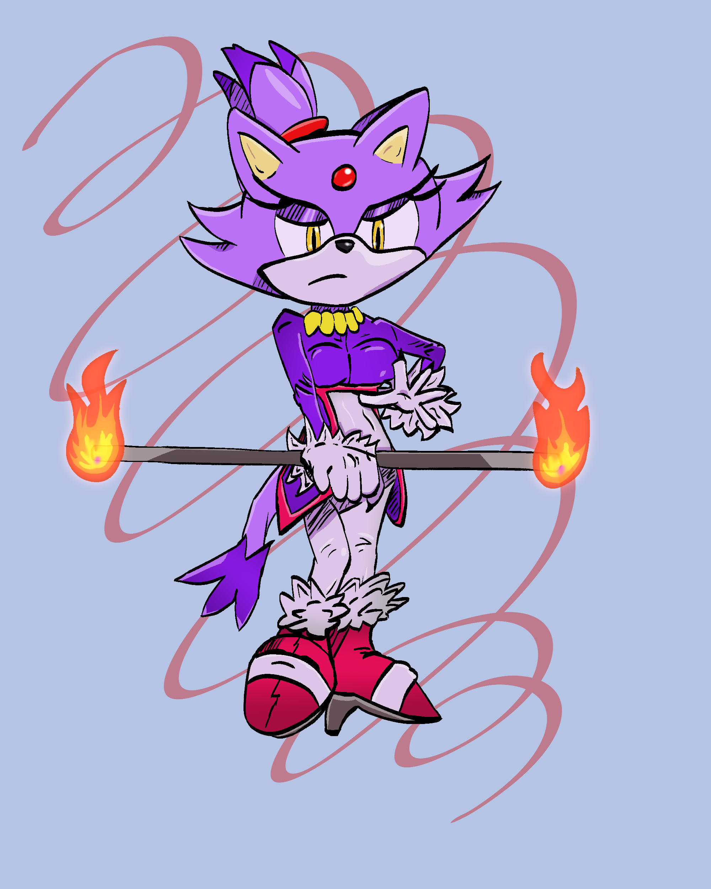
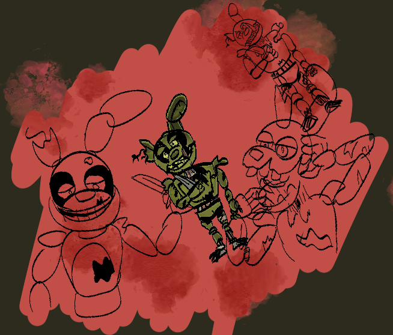

Programming & Web
C, C#, Java, JavaScript, Python, C++, HTML5, CSS, Ruby, GML, GitHub, WordPress
Tampa Bay, Florida
Computer Science Student • Software & GIS • Game Developer • Digital Artist
I build software, interactive systems, visual projects, and data-driven tools, with long-term interests in scientific programming, ecology, conservation, and games.
About
I am a computer science student at the University of South Florida and a multimedia game-design graduate with more than a decade of independent project experience. My background spans programming, game systems, QA/testing, web development, visual design, project leadership, data visualization, animal care, and zoo nutrition.
I am especially interested in roles where software and data intersect with ecology, conservation, environmental science, GIS, research, or animal-care systems. Outside of career work, I continue to develop games and digital art through Retnuh Productions.
Technical toolkit
C, C#, Java, JavaScript, Python, C++, HTML5, CSS, Ruby, GML, GitHub, WordPress
QGIS, Power BI, Microsoft Excel, data cleaning, mapping, dashboard design, visualization, QA/QC, recordkeeping
Unity, Godot, Unreal Engine, GameMaker Studio, RPG Maker MZ/VX Ace, systems design, level design, UI, testing
Clip Studio Paint, Aseprite, GIMP, Photoshop, Illustrator, Maya, Blender, Spine 2D, Figma
Species-specific diet preparation, feeder-insect husbandry, reptile care, sanitation, welfare observation, introductory ZIMS and Zoo Diet NaviGator
Program Design in C, Java Programming, Computer Organization, RISC-V assembly concepts, Discrete Structures, Calculus I–III, project management
Featured work
Selected projects showing programming, data, GIS, web development, AI-assisted workflows, and technical problem solving.
Cleaning and standardizing public occurrence records for invasive and nonnative reptiles in Florida, then building species- and county-level maps and an interactive dashboard to examine distribution and reporting patterns.
Designed as a portfolio bridge between computer science, GIS, environmental data, and my animal/conservation interests.
An extensive Unity/C# controller for a momentum-focused platform RPG, supporting running, jumping, spin states, fluttering, wall interactions, ledge and vine behavior, custom air physics, animation synchronization, and designer tuning.
Refactored a university C project into a multi-file tutor directory backed by a dynamically allocated linked list. Supports sorted insertion, duplicate detection, preference-based search, record deletion, and safe memory cleanup.
Cleaned and expanded a Java coursework project that tracks egg production across individual birds and weeks, validates input, calculates totals and weekly averages, and identifies the highest producer.
Interactive web project built around NASA astronomy data, with API-driven content, responsive presentation, date controls, gallery behavior, and error/loading states.
Responsive educational webpage created through the Global Career Accelerator, emphasizing adaptive layouts, interactive presentation, localization considerations, and support across display sizes.
AI-assisted web-development project exploring chatbot interaction, JavaScript integration, user-facing recommendations, and deployment workflows.
Coursework experiment
A browser-game prototype built for a Global Career Accelerator assignment that required generative AI to be used throughout the project, including visual-asset generation. I include it as an example of AI-assisted JavaScript prototyping and iteration, not as a showcase of my personal visual-art style.
Creative development
Long-term story-driven platform RPG developed through Retnuh Productions. I lead production and contribute across programming, systems design, level design, UI, writing, QA, art direction, documentation, and team coordination.
I coordinate a multidisciplinary team of 15+ contributors and am currently developing a polished vertical slice.
An independent fan-game project inspired by the Donkey Kong Country series. I built a pre-rendered graphics workflow modeled on SNES-era production techniques: rigging and posing a 3D character in Blender, rendering animation frames, filtering and batch-processing the output into low-resolution 2D sprites, and creating expressive Clip Studio portrait sets for dialogue and UI.
The project demonstrates technical-art workflow design as well as RPG systems, writing, UI experimentation, illustration, and game-asset production.
A completed game created for the 2017 Indie Game Making Contest and one of my earlier full project releases. It represents the beginning of my longer-running production and game-design experience.
Background
Prepared and distributed species-specific diets, supported high-volume nutrition-center operations, maintained feeder insects, followed sanitation and quality-control procedures, and gained introductory exposure to ZIMS, Zoo Diet NaviGator, Power BI, animal behavior, enrichment, welfare, and cooperative-care concepts. Completed a Cuban iguana nutrition research summary for staff.
Lead a distributed game-development team of more than 15 contributors while designing systems, levels, UI, narrative, production workflows, technical documentation, testing processes, and publisher-facing materials.
Operate a small feeder-insect supply business serving reptile keepers and a retail pet store, managing colony husbandry, environmental control, population monitoring, inventory, customer orders, records, and bulk fulfillment.
Expected 2028
Bachelor of Arts in Computer Science
Minor in Geographic Information Systems
December 2023
Associate of Science in Multimedia: Game Design
High Honors • 3.8 GPA • Phi Theta Kappa
Training
Visual work
Digital illustration and character-focused work created primarily in Clip Studio Paint, alongside game-production art and 2D/3D technical-art workflows.






This selection shows several parts of my game-art workflow: a Donkey Kong pre-rendered sprite sheet and its rigged Blender source model, a hand-drawn DK dialogue portrait set, Maya low-poly environment work, a pixel-art interior, an RPG character sprite, and a Kid Hop-o voxel spaceship model. The DKCRPG pipeline in particular combines 3D rigging/rendering with image filtering and batch file processing to produce SNES-style 2D assets.